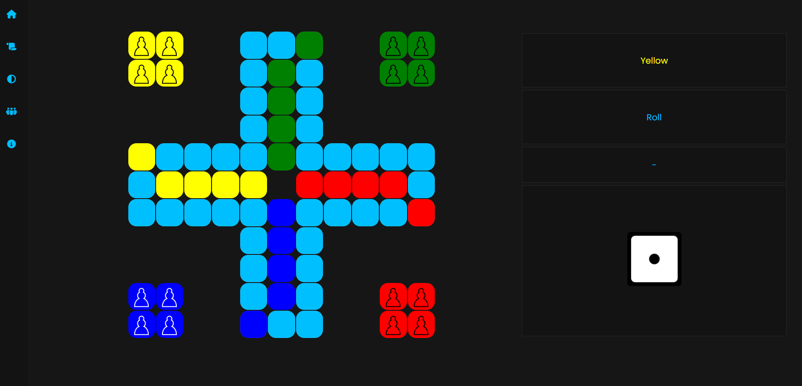
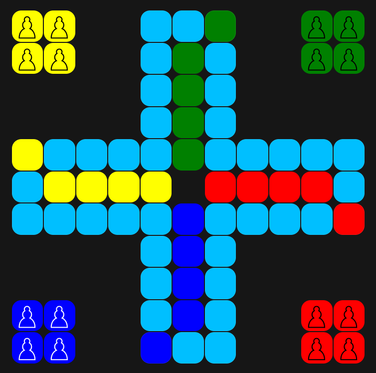
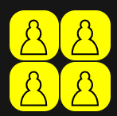
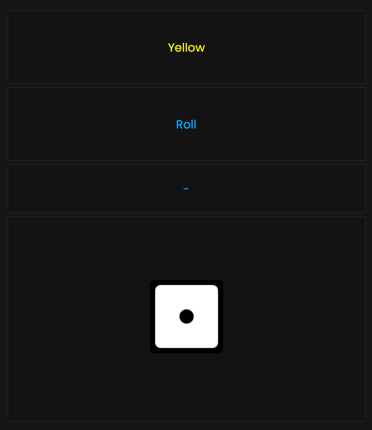

Instruction:
Contents:
How to use UI
This is where you'll be playing:
This is the board, here you will be moving your pawns trying to get to the base. The pawns will be moving on the blue tiles:
Here is the home:
This is the base:
And here pawns will move frome home:
This is the right menu, here various information will be displayed:
Here is displayed what is currenty happening. The top displayes the current player and the bottom tells what the player should now do:
This is the leaderboard, it will display the order that players finished the game
This is the dice. To roll you have to click on it and it will display the amount of dots that were rolled:
This is the navigation, here you will be moving around, thought it is not recomended in a middle of the game as you will lose all your progress:
Game instructions
To start you need 4 players. Each player have to chosse a color of their pawns. The first player is the one that chose yellow.
The round starts with a player rolling the dice and if he has pawns on the board moving them by the amount that was rolled.
When player rolls a 6 he can either move one of his pawns that are on the board or move to the board one of the pawns that are in home. Then the player rolls again.
When a pawn steps on another pawn that isn't the same color the one that was there eariler will be moved to its home.
The goal of the game is to move all your pawns to the base.
To move a pawn to the base it has to go around the whole board.
The game ends with all players pawns being in their bases.